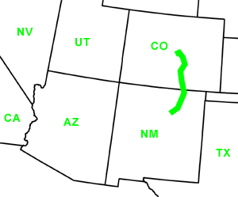

Day Eighteen
Las Vegas, NM - Divide, CO
Date: 06/28/2002
Distance: 323 miles
Weather: partly cloudy. Temperatures varied from 47 to
95.
We zoomed north on I 25. Did we mention many of the higways have a speedlimit of 75 mph?
We stopped Walsenburg, CO for lunch.
Finished listening to The Brethren. Not the most enjoyable book we've listened to yet.
Entered Colorado Springs in the afternoon. We drove around a bunch, checking out downtown via car. Stopped at Colorado College and then University of Colorado. Gave Ogden some excercise and we checked our email. The streets in this city are wide and the views spectacular.
After looking around town for a hotel to stay in, we decide to just camp again. The RV/campgrounds are no good, and the hotel's are $90. We ventured west to Mueller State Park. We took a chance since we didn't even know if the park was open (forest fires). And if it was open, we weren't sure if they would have any room since it was Friday. As we drove up into the mountains, the temperature began dropping significantly. State Parks have been good to us. That had room for us. The campsite had a view and some nice coin showers.
Dinner at Fiesta Mexicana. Corin's meal comes out on a plate the size of a bicycle tire.The servers were actually Mexican and the food was too.
Back to camp. Everything that has an odor gets locked in the car to prevent a visit from curious bears. One game of Rummy 500 and then off to sleep warm in our sleeping bags.
Ogden ties Jared up. She's a genius dog.